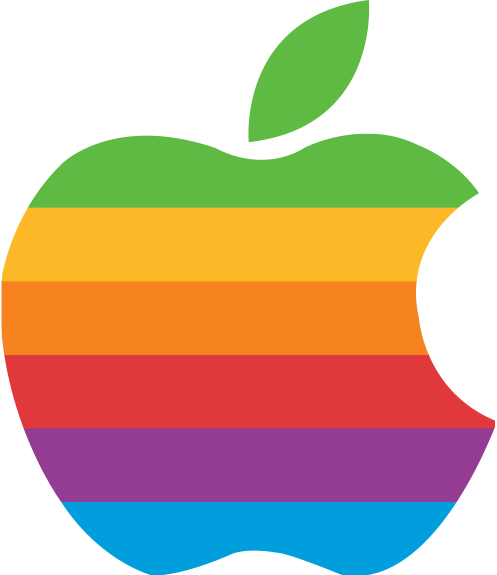

<!DOCTYPE html>
<html lang="ko">
<head>
    <meta charset="UTF-8">
    <meta name="viewport" content="width=device-width, initial-scale=1.0">
    <title>BOM, 브라우저 객체 실습</title>
    <script>
        /* 사용자 OS 환경이 윈도우 사용자면 MS Windows OS 사용자(도큐먼트)
        아니면, MS Windows OS 이외의 사용자(도큐먼트) */
        var client = navigator.userAgent.toLowerCase();
        // alert(client);
        var result = client.indexOf("windows");
        // console.log(result);
        if (client.match("window") != null) {
            document.write('<br>MS Window OS 사용자');
        } else {
            document.write('<br>MS Window OS 이외의 사용자');
        }
    </script>
</head>
<body>

</body>
</html>